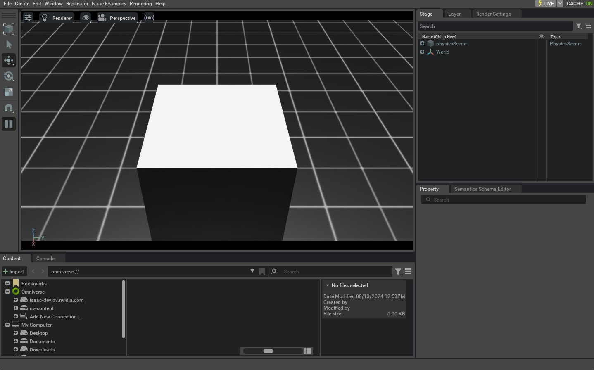

本教程将深入介绍如何使用 app.AppLauncher，通过 CLI 参数和环境变量配置 Simulator。重点演示如何启用实时串流、配置 app.AppLauncher 所封装的 isaacsim.simulation_app.SimulationApp 实例，同时兼容用户自定义选项。
app.AppLauncher 对 isaacsim.simulation_app.SimulationApp 进行了封装，目的是简化后者的配置。isaacsim.simulation_app.SimulationApp 需要加载多个 Extension 才能启用相应功能；其中部分 Extension 对加载顺序有明确要求，并且彼此存在依赖关系。
此外，headless 等启动选项必须在创建实例时确定，并可能与特定 Extension 存在隐式关联，例如实时串流相关的 Extension。app.AppLauncher 为这些 Extension 和启动选项提供了统一、可移植的配置接口，适用于不同的使用场景。为此，它提供了可与用户自定义参数合并的 CLI 及环境变量选项，并将属于 isaacsim.simulation_app.SimulationApp 的参数继续传递给该实例。该启动工具由 isaaclab.app Module 提供。
1 代码
本教程对应 launch_app.py，位于 scripts/tutorials/00_sim 目录。
代码 launch_app.py
# Copyright (c) 2022-2026, The Isaac Lab Project Developers (https://github.com/isaac-sim/IsaacLab/blob/main/CONTRIBUTORS.md).
# All rights reserved.
#
# SPDX-License-Identifier: BSD-3-Clause
"""
This script demonstrates how to run IsaacSim via the AppLauncher
.. code-block:: bash
# Usage
./isaaclab.sh -p scripts/tutorials/00_sim/launch_app.py
"""
"""Launch Isaac Sim Simulator first."""
import argparse
from isaaclab.app import AppLauncher
# create argparser
parser = argparse.ArgumentParser(description="Tutorial on running IsaacSim via the AppLauncher.")
parser.add_argument("--size", type=float, default=1.0, help="Side-length of cuboid")
# SimulationApp arguments https://docs.omniverse.nvidia.com/py/isaacsim/source/isaacsim.simulation_app/docs/index.html?highlight=simulationapp#isaacsim.simulation_app.SimulationApp
parser.add_argument(
"--width", type=int, default=1280, help="Width of the viewport and generated images. Defaults to 1280"
)
parser.add_argument(
"--height", type=int, default=720, help="Height of the viewport and generated images. Defaults to 720"
)
# append AppLauncher cli args
AppLauncher.add_app_launcher_args(parser)
# parse the arguments
args_cli = parser.parse_args()
# launch omniverse app
app_launcher = AppLauncher(args_cli)
simulation_app = app_launcher.app
"""Rest everything follows."""
import isaaclab.sim as sim_utils
def design_scene():
"""Designs the scene by spawning ground plane, light, objects and meshes from usd files."""
# Ground-plane
cfg_ground = sim_utils.GroundPlaneCfg()
cfg_ground.func("/World/defaultGroundPlane", cfg_ground)
# spawn distant light
cfg_light_distant = sim_utils.DistantLightCfg(
intensity=3000.0,
color=(0.75, 0.75, 0.75),
)
cfg_light_distant.func("/World/lightDistant", cfg_light_distant, translation=(1, 0, 10))
# spawn a cuboid
cfg_cuboid = sim_utils.CuboidCfg(
size=[args_cli.size] * 3,
visual_material=sim_utils.PreviewSurfaceCfg(diffuse_color=(1.0, 1.0, 1.0)),
)
# Spawn cuboid, altering translation on the z-axis to scale to its size
cfg_cuboid.func("/World/Object", cfg_cuboid, translation=(0.0, 0.0, args_cli.size / 2))
def main():
"""Main function."""
# Initialize the simulation context
sim_cfg = sim_utils.SimulationCfg(dt=0.01, device=args_cli.device)
sim = sim_utils.SimulationContext(sim_cfg)
# Set main camera
sim.set_camera_view([2.0, 0.0, 2.5], [-0.5, 0.0, 0.5])
# Design scene by adding assets to it
design_scene()
# Play the simulator
sim.reset()
# Now we are ready!
print("[INFO]: Setup complete...")
# Simulate physics
while simulation_app.is_running():
# perform step
sim.step()
if __name__ == "__main__":
# run the main function
main()
# close sim app
simulation_app.close()
2 代码解析
2.1 向 ArgumentParser 添加参数
AppLauncher 可以与脚本自定义的 CLI 参数共同使用，同时提供统一、可移植的启动接口。
本教程创建一个 argparse.ArgumentParser，并添加脚本专用参数 --size，以及将传递给 SimulationApp 的 --height 和 --width。
--size 不由 AppLauncher 处理，但可以与 AppLauncher 参数合并到同一个 ArgumentParser 中。调用 add_app_launcher_args() 后，再使用 argparse.ArgumentParser.parse_args() 生成 argparse.Namespace，并将结果直接传给 AppLauncher。
import argparse
from isaaclab.app import AppLauncher
# create argparser
parser = argparse.ArgumentParser(description="Tutorial on running IsaacSim via the AppLauncher.")
parser.add_argument("--size", type=float, default=1.0, help="Side-length of cuboid")
# SimulationApp arguments https://docs.omniverse.nvidia.com/py/isaacsim/source/isaacsim.simulation_app/docs/index.html?highlight=simulationapp#isaacsim.simulation_app.SimulationApp
parser.add_argument(
"--width", type=int, default=1280, help="Width of the viewport and generated images. Defaults to 1280"
)
parser.add_argument(
"--height", type=int, default=720, help="Height of the viewport and generated images. Defaults to 720"
)
# append AppLauncher cli args
AppLauncher.add_app_launcher_args(parser)
# parse the arguments
args_cli = parser.parse_args()
# launch omniverse app
app_launcher = AppLauncher(args_cli)
simulation_app = app_launcher.app
以上只是向 AppLauncher 提供参数的一种方式；其他用法请参阅其 API 文档。
2.2 理解 --help 的输出
执行脚本时传入 --help，可以同时查看脚本自定义参数和 AppLauncher 参数。
./isaaclab.sh -p scripts/tutorials/00_sim/launch_app.py --help
[INFO] Using python from: /isaac-sim/python.sh
[INFO][AppLauncher]: The argument 'width' will be used to configure the SimulationApp.
[INFO][AppLauncher]: The argument 'height' will be used to configure the SimulationApp.
usage: launch_app.py [-h] [--size SIZE] [--width WIDTH] [--height HEIGHT] [--headless] [--livestream {0,1,2}]
[--enable_cameras] [--verbose] [--experience EXPERIENCE]
Tutorial on running IsaacSim via the AppLauncher.
options:
-h, --help show this help message and exit
--size SIZE Side-length of cuboid
--width WIDTH Width of the viewport and generated images. Defaults to 1280
--height HEIGHT Height of the viewport and generated images. Defaults to 720
app_launcher arguments:
--headless Force display off at all times.
--livestream {0,1,2}
Force enable livestreaming. Mapping corresponds to that for the "LIVESTREAM" environment variable.
--enable_cameras Enable cameras when running without a GUI.
--verbose Enable verbose terminal logging from the SimulationApp.
--experience EXPERIENCE
The experience file to load when launching the SimulationApp.
* If an empty string is provided, the experience file is determined based on the headless flag.
* If a relative path is provided, it is resolved relative to the `apps` folder in Isaac Sim and
Isaac Lab (in that order).
输出中会列出脚本直接定义的 --size、--height 和 --width，以及由 AppLauncher 添加的其他参数。
帮助信息前的 [INFO] 消息还会指出哪些参数将交给 SimulationApp。本例中的 --height 和 --width 与 SimulationApp 支持的名称和类型匹配，因此会自动转交。更多示例请参阅 SimulationApp 配置说明。
2.3 使用环境变量
AppLauncher 的 --livestream、--headless 等参数都有对应的环境变量。通过 CLI 传入参数，与在运行脚本前设置相应环境变量具有相同效果。
环境变量适合保存跨会话使用的默认配置，例如写入 ${HOME}/.bashrc。如果同时提供 CLI 参数和环境变量，则 CLI 参数优先。
这些参数适用于大多数通过 AppLauncher 启动的脚本。需要注意的是，--enable_cameras 会启用 Off-Screen Renderer，并且只兼容 isaaclab.sim.SimulationContext，不适用于 Isaac Sim 原生的 isaacsim.core.api.simulation_context.SimulationContext。
3 代码执行
现在运行示例 Script：
LIVESTREAM=2 ./isaaclab.sh -p scripts/tutorials/00_sim/launch_app.py --size 0.5
该 Command 会在 Simulation 中生成一个体积为 0.5 m³ 的长方体。由于 LIVESTREAM 环境变量隐含启用了 --headless，因此不会显示本地 GUI。需要查看画面时，可以使用 Isaac WebRTC Livestream；目前这是 Container 中支持的 Visualization 方式。按启动 Terminal 中的 Ctrl+C 可终止进程。

接下来检查 AppLauncher 如何处理相互冲突的参数：
LIVESTREAM=0 ./isaaclab.sh -p scripts/tutorials/00_sim/launch_app.py --size 0.5 --livestream 2
运行结果与上一个 Command 相同。虽然环境变量设置了 LIVESTREAM=0，但 CLI 参数 --livestream 的优先级更高，因此最终仍会启用 Livestream。按 Ctrl+C 可终止进程。
最后，通过 AppLauncher 向 SimulationApp 传递参数：
LIVESTREAM=2 ./isaaclab.sh -p scripts/tutorials/00_sim/launch_app.py --size 0.5 --width 1920 --height 1080
运行行为仍与前面相同，但 Viewport 会以 1920 × 1080 分辨率 Rendering。采集高分辨率视频时可以提高该值；若更重视 Simulation 性能，则可以降低分辨率。按启动 Terminal 中的 Ctrl+C 可终止进程。